Introduction
This responsive three-page website for a fictitious travel agency contains a showcase of multi-column layouts created with CSS flexbox.
You can display a finished version of this project by clicking the image below.

Learning Goals
At the end of this Tutorial you will be able to:
- Create layouts with CSS flexbox that display as two, three or four columns on desktop/laptop screens and as two columns or a single column on mobiles.
- Add gutters between columns.
- Add background colours.
Portfolio project folders and files
Your first step is to download the files you need for this project.
- Download the following compressed file to your computer:
travel.zip
- If a sub-folder named portfolio does not already exist inside your websites folder, create it now.

- Uncompress the ZIP file into your websites/portfolio sub-folder as shown below.

This will create a sub-folder named travel inside your portfolio folder.

The folders, sub-folders and files for this 'Travel' project will be as shown below.
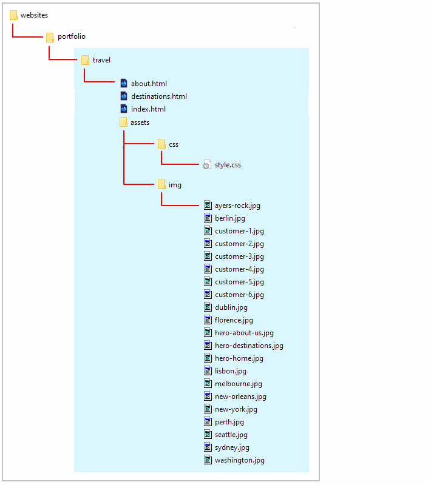
Working with your project files
Now you can begin to work with the files you have downloaded.
- In Visual Studio Code, open the following downloaded files. The first three are web pages; the fourth is a stylesheet file:
- index.html, destinations.html and about-us.html: You will find these in the main folder of your travel folder.
- style.css: You will find this in the /assets/css/ sub-folder of the travel folder.
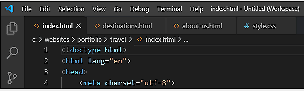
You can close any other files you may have open in VS Code.
The structure of your project web pages
Display the three project web pages in your Chrome or Mozilla Firefox Developer Edition browser. They should look as shown below.
Note that all three web pages have a light grey background.

Visual layout guides
To help you distinguish between the various parent and child elements, the following two styles are added at the bottom of the style.css stylesheet.
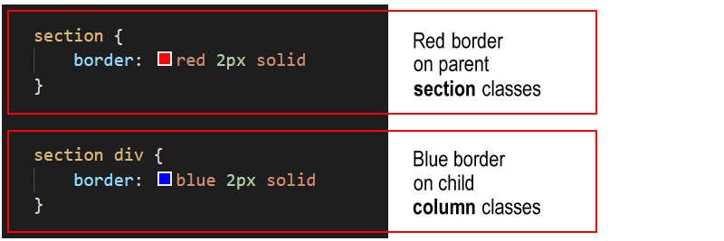
Before and after each of the parent flexbox containers is a set of three ‘blank’ or ‘spacer’ paragraphs. These are to help you see where one container ends and the next container starts.

As with the coloured borders, you can remove these blank paragraphs at the end of the project.
As you can see, each web page is sub-divided or structured into ‘content blocks’.
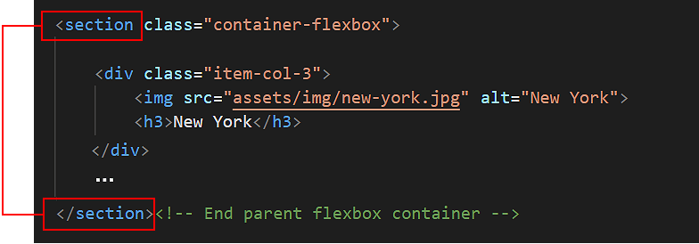
You could use the <div> ...</div> for this purpose.
But a better, more modern HTML5 way is to use another tag with the same effect: the <section> ...</section> tag.
Hero blocks and the header tag
Each web page begins with a hero section that is styled with the <header> ...</header> tag.
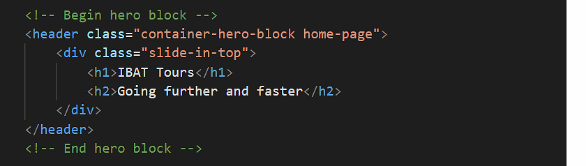
This is similar to the <div> ...</div> tag, but ii is the preferred HTML5 way of identfying the first, introductory content block of a webpage.
Section blocks and class names
Under the ‘hero’ section (container-hero-block), the basic structure of the three web pages is as follows.


- All content is contained inside a series of parent containers with a class name of flexbox-container.
- On all three web pages, some content stretches the full width of both desktop/laptop and mobile screens. This full-width content is within a child column named item-col-1.
- On the index.html pages, the parent containers have child columns (item-col-3) that display as three columns on desktop/laptop screens but as one column on mobiles.
- On the about-us.html page, the child columns (item-col-3) display as three columns on desktop/laptop screens, but as two columns on mobiles.
- On the destinations.html page, the parent containers have child columns that display as four columns on desktop/laptop screens and as two columns (item-col-4-2) on mobiles.
Adding padding to the sections
Follow these steps to add spacing around the four inside edges (top, right, bottom and left) of the parent flexbox containers.
- In the style.css file, at around line 80, you can see two .container-flexbox selectors have been created.
The first is inside a media query for desktops and laptops. The second is inside a media query for mobile screens.
- Add the padding values below for the two .container-flexbox selectors.

- Save your style.css file.
In your web browser, view the web page on desktop/laptop and mobile size screens. It should look as shown below.
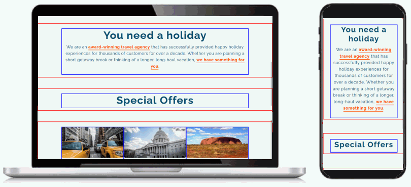
Adding a background colour to the sections
In the CSS file, you can see a class named bg-orange has been created to apply an orange background colour. It takes effect only when combined with the container-flexbox class.
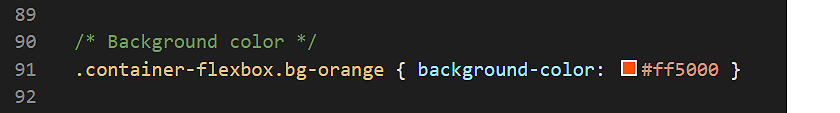
Let’s apply this bg-orange class to some of the parent flexbox containers in your web pages.
- In the index.html web page, add the class name of bg-orange to the parent container with the child .item-col-1 that has inside it the text "Special Offers".
 Also, add the bg-orange class to the parent container with the three child items of .item-col-3.
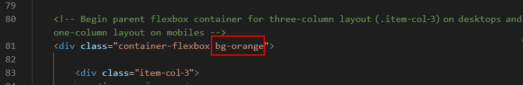
Also, add the bg-orange class to the parent container with the three child items of .item-col-3.
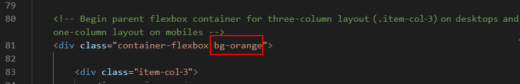
- Save the index.html web page. On desktop/laptop and mobile screens, it should look as shown below.
- Switch to the destinations.html web page.
Add the class name of bg-orange to the two parent containers with the child column .item-col-1. The first container contains the text "Europe" and the second, "Australia."
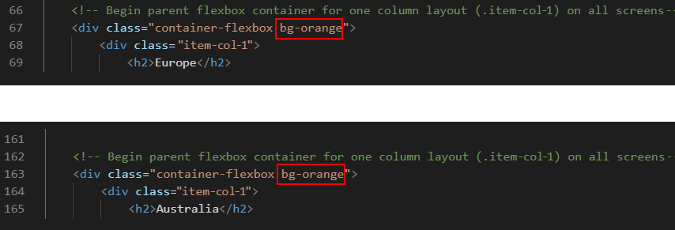
Also, add the bg-orange class name to the two parent containers with the child items of .item-col-4-2 for the locations of "Europe" and "Australia".

- Save the destinations.html file. On desktop/laptop and mobile screens, it should look as shown below.

- For those parent containers with an orange background, the headings and paragraph text is difficult to read.
Add the following new styles to your stylesheet to change the text content colour to white where the background colour is orange.
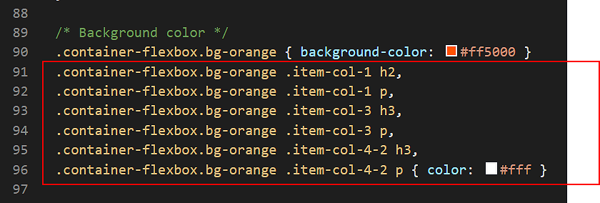
- Save the style.css stylesheet. On desktop/laptop and mobile screens, your web pages should now look as shown below.

You have now finished working with the container-flexbox parent containers. All your remaining changes will be to the child items inside the parent containers.
Styling the single-column layouts
On both desktop/laptop and mobile screens, parent containers with an item-col-1 child will always display as a single column. Let's add some padding to these child items.
- In your style.css stylesheet, add the following padding values for the .item-col-1 selector within all parent containers.
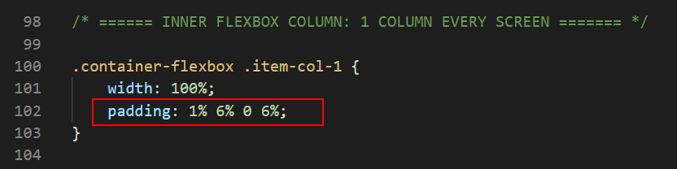
- Save the style.css file, and, in your web browser, view the effect on your web page.
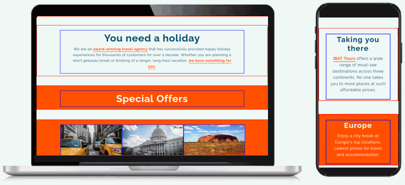
Styling the three-column layouts
On desktop/laptop screens, the three-column layout has no gutter spacing between the child items. Let’s change this.
- In the style.css stylesheet, within the desktop/laptop media query for the .item-col-3 class selector, reduce the width from 33.33% to 30% as shown below.
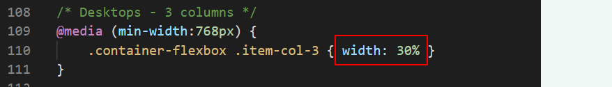
The remaining space of 10% will be added as a gutter between the child items.
This applies only to desktop/laptop screens (768px or wider) and has no effect on mobile screens (767px or narrower).
- Add some vertical spacing under the .item-col-3 columns as follows.
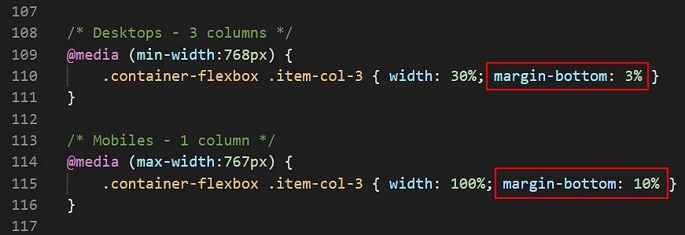
- Save the style.css file, and, in your web browser, view the effect on your web page.

Styling the four-column layouts
In the destinations.html web page, you can see that three of the content containers have child columns that display as four columns on desktops/laptops and as two columns on mobiles.
These child columns have a class of .item-col-4-2. At the moment, the .item-col-4-2 class has no gutter spacing between the child items. Let’s change this.
- In the style.css stylesheet, within the desktop/laptop media query for the .item-col-4-2 class selector, reduce the width from 25% to 22% as shown below.
And within the mobile media query for the .item-col-4-2 class selector, reduce the width from 50% to 47%.
Also, add the following vertical spacing under the child columns.
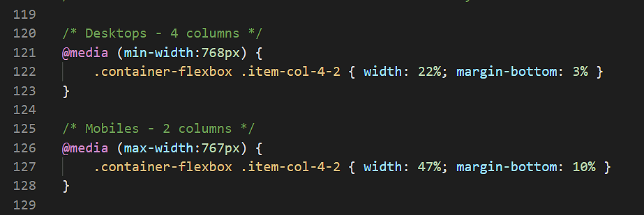
- Save the style.css file, and, in your web browser, view the effect on your web page.
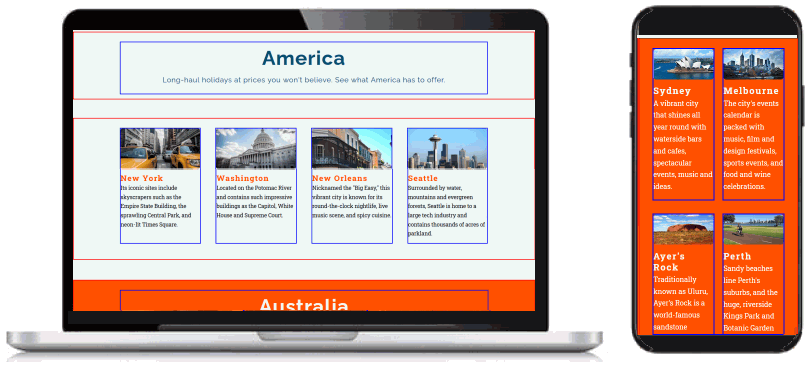
Styling the customer testimonials section
On the about-us.html web page is a section named "Some customer testimonials". The parent flexbox containers have a special class named happy-users. Let’s update the related style rules.
- In the style.css stylesheet:
- Add a new style to center-align the content (text and images) within the .item-col-3 child items that have, as their parent, a container with the class of container-flexbox and happy-users.
- Add some gutter spacing between the .item-col-3 child columns and some vertical spacing under them.
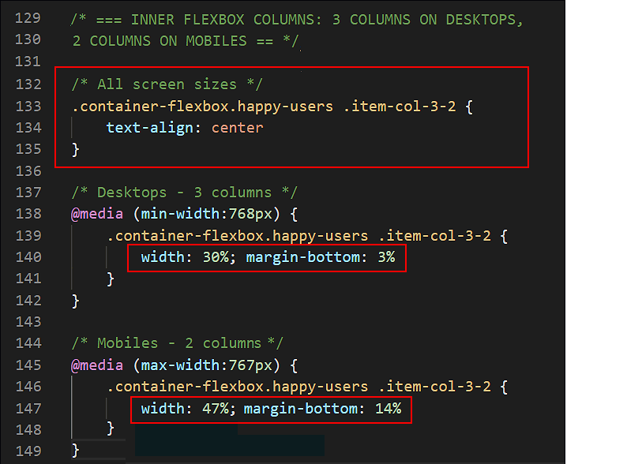
- Lastly, add the following style properties and values for the images within the .item-col-3 child columns.
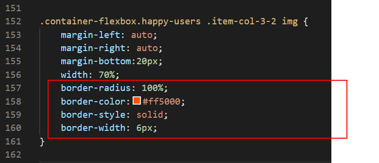
These style rules will display the images as circles, and add a coloured border around them.
- Save the style.css file, and, in your web browser, view the effect on your web page.

Removing the visual layout guides
You can now delete the visual layout aids from your web pages and stylesheet.
- Within your web pages, delete the sets of three blank paragraphs before and after the parent flexbox containers.
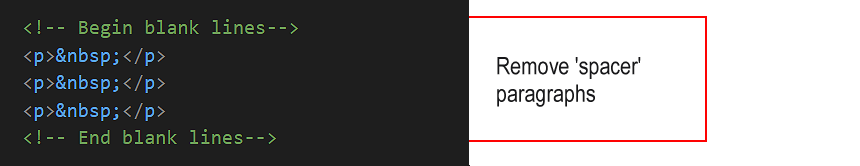
- At the bottom of your style.css file, delete the style for coloured borders around the parent containers and child items.

When finished, save your index.html, destinations.html, about-us.html and style.css files.
Uploading your project to GitHub
The final step is to upload your project to GitHub.
All the files for this project are in a sub-folder named travel of your websites/portfolio folder.
So you will need to upload this travel folder, which contains both files and sub-folders, to your account on GitHub.
- Open a new tab in your web browser and go to GitHub.com. If you are not already signed in to your GitHub account, sign in now.

- On your GitHub home page, click the name of the repository (‘repo’) that holds your web pages. Its name will look as follows, where username is your chosen username on GitHub.
username.github.io

- On the next screen displayed, you can see a list of the contents your repository.
At the top of the list is a folder named portfolio. You created this folder when uploading your Smoothies project.
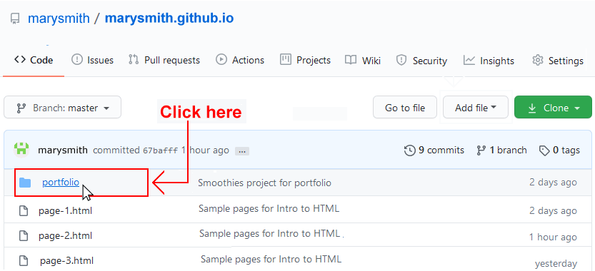
Click on the portfolio folder to access it.
- Your GitHub screen should look like that shown below. You can see the folder’s name near the top of the screen.

- The portfolio folder already contains a smoothies sub-folder and other sub-folders from your previous projects.
- The portfolio folder is also the location to where you want to upload your travel project sub-folder.
 IMPORTANT
IMPORTANT Ensure your GitHub account is displaying the
portfolio folder before continuing.
Otherwise, you will upload your new project to the incorrect folder.
- With the portfolio folder displayed on your GitHub screen, click the Add file button and, from the dropdown list displayed, choose the option Upload files.

- You are now ready to upload the entire travel folder and all its contents to the portfolio folder on your GitHub account.
In File/Windows Explorer on your computer, drag-and-drop the travel folder to the GitHub tab in your web browser.

- After uploading the travel folder, scroll down to the bottom of the GitHub screen, enter a short message in the Commit changes box, click the Commit changes button, and wait for the upload to complete.
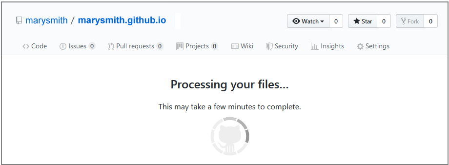
- After GitHub has finished processing your upload, it will re-display the main page of your repository. This will list your portfolio folder and files you previously uploaded to your main repository.
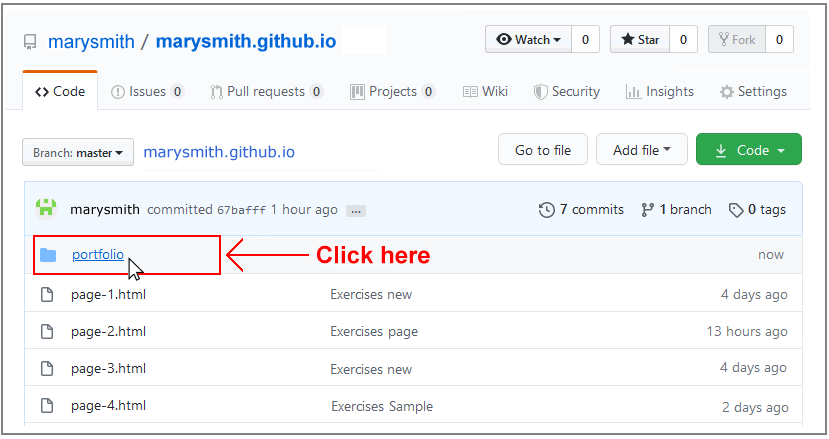
Click on the portfolio folder.
- On the next screen GitHub displays you should see the sub-folders from your previous projects and the travel folder you have just uploaded.
 Click on the travel folder.
Click on the travel folder.
- On the next screen you should see the folder’s index.html file and its assets sub-folder.
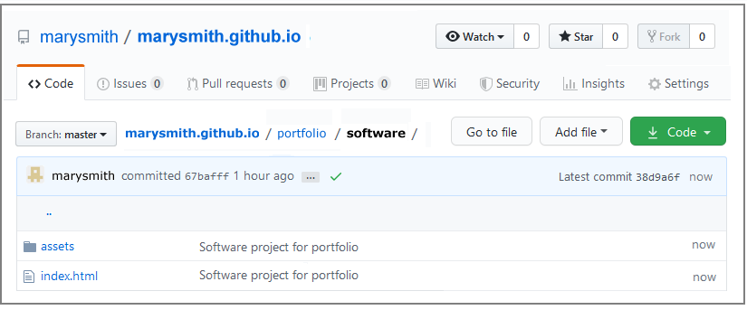
- Click on the assets sub-folder to view its contents. You should see that it contains the two sub-folders: css and img.
- Within the assets sub-folder, click on the css sub-folder. Check that it contains the stylesheet file.
- Within the assets sub-folder, click on the img sub-folder. Check that it contains all the image files.
Your web page is now published on GitHub at a web address similar to the following, where username is the username you have chosen for your GitHub account:
https://username.github.io/portfolio/travel/index.html
or, simply:
https://username.github.io/portfolio/travel
It may take a few minutes for your uploaded files to appear on GitHub.
Return to Contents.